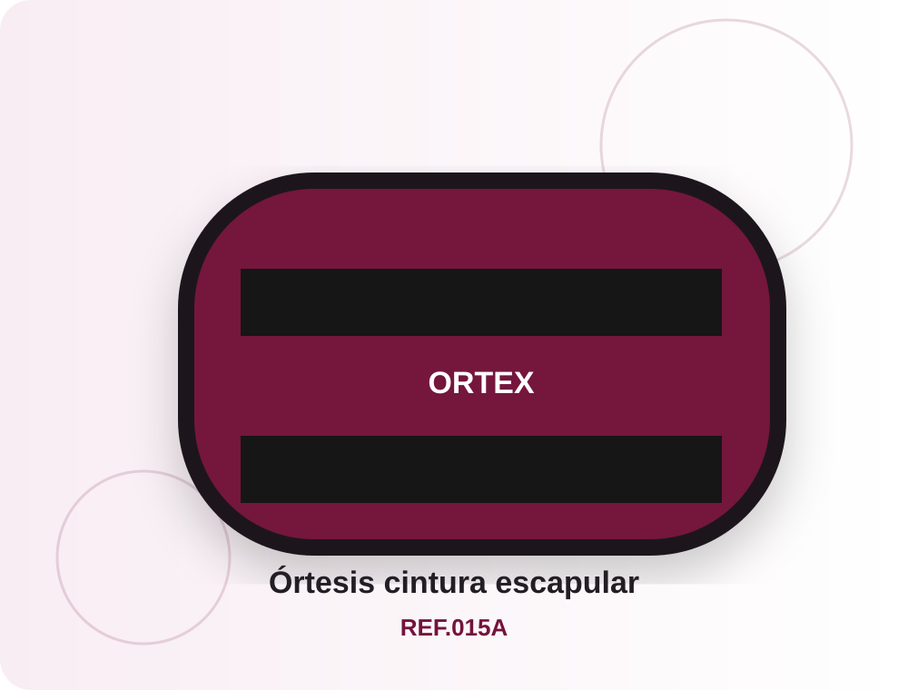
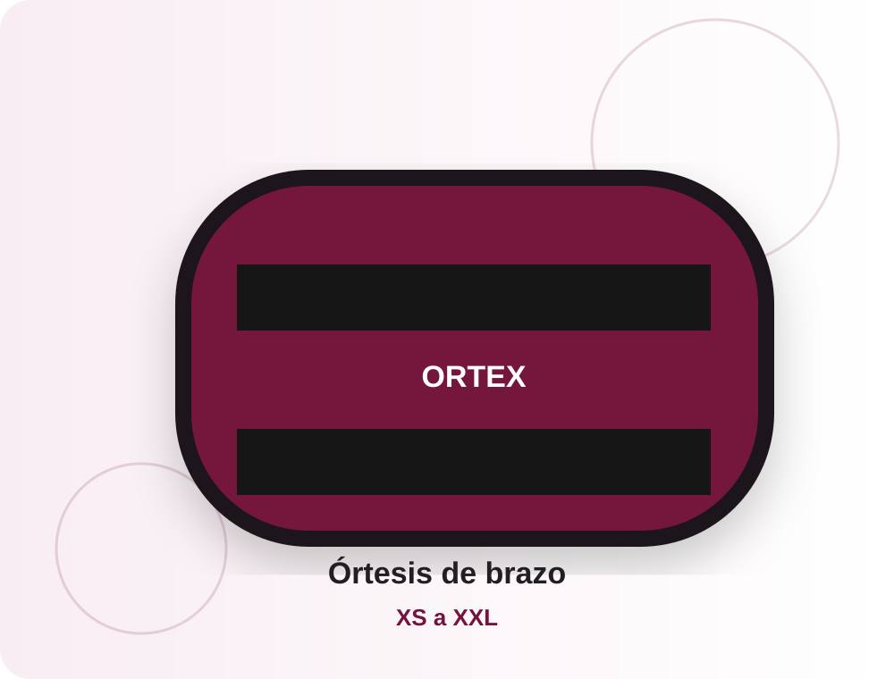

Miembro superior
Tutor inmovilizador para la articulación del hombro
Ortesis diseñada para proporcionar estabilidad y fijación durante el tratamiento y la recuperación del hombro.
REF.08Ver detalles
Inicio › Miembro superior
Soluciones orientadas a hombro, cintura escapular y brazo.
Productos de la categoría
Fichas preparadas con descripción, características, tallas e indicaciones.
Ortesis diseñada para proporcionar estabilidad y fijación durante el tratamiento y la recuperación del hombro.

Ortesis para hombro y brazo diseñada para soporte y estabilidad tras lesiones, traumatismos o intervenciones quirúrgicas.

Órtesis ligera y transpirable con correas ajustables para soporte de hombro y brazo durante la recuperación.